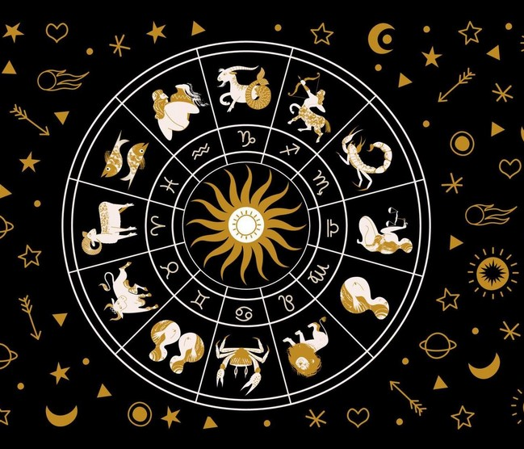

Ngozika (Zee) Nwachukwu is second year student at Ontario Tech University studying Software engineering.
She has a passion for web design and development as well as a passion for astrology.
The first model of Zee's astrologies was a make-shift C++ website that she made as a project in her Intro to programming class
and now she decided to bring that same concept to life using HTML, CSS and JAVASCRIPT.
Overall, Zee's Astrologies is a way for her to merge her two passions into something fruitful and she hopes to continue
to bring her other passions into web development to make even cooler websites.
Welcome to Zee's Astrologies!
Whether it's curiosity about the stars or a desire to uncover the mysteries of personality and fate, the zodiac has fascinated humanity for centuries.
From ancient civilizations gazing at the night sky to modern-day believers seeking insight into their lives,
zodiac signs have offered a cosmic lens through which we explore our strengths, weaknesses, relationships, and destiny.
The stars above have always inspired a sense of wonder, and through the ages, people have turned to the zodiac to understand themselves, their path in life, and even their connections with others.
The zodiac isn’t just about the future...it’s a map of your present, a reflection of who you are at your core, and how you might grow and evolve as you journey through life.
Here at Zee’s Astrologies, we believe that astrology is more than just a belief system or a way to predict what’s to come.
It’s a powerful tool for self-reflection, personal growth, and understanding the intricate patterns of the universe.
Whether you’re new to the world of astrology or a seasoned stargazer, our mission is to guide you on a journey through the constellations,
unlocking the secrets of the stars and helping you discover the depths of your true self.
We are more than happy to provide you with a brief overview of what your zodiac sign is all about. Whether you're trying to do more research overall, looking for your zodiac or your loved ones zodiac we will briefly describe it to you.
What's a zodiac sign?

A zodiac sign is a reflection of the position of the Sun at the time 1f your birth, an age-old method that ties your personal identity to the movement of the cosmos.
It is believed that the Sun's position in the sky along with the alignment of planets and stars — at the exact moment you were born influences not only your personality but your emotional reactions,
how you connect with others, and how you interact with the world.
The twelve zodiac signs, each with their own unique traits, are divided into four elements: Fire, Earth, Air, and Water.
These elements shape the core characteristics of each sign, influencing everything from emotional temperament to compatibility with others.
Fire Signs
(Aries,
Leo,
Sagittarius):
Passionate, bold, and dynamic, these signs are full of energy and enthusiasm.
They are natural leaders and often follow their instincts with confidence.
Earth Signs
(Taurus,
Virgo,
Capricorn):
Grounded and practical, these signs are known for their patience and reliability.
They value stability and tend to approach life with a steady, methodical mindset.
Air Signs
(Gemini,
Libra,
Aquarius):
Intellectual and communicative, air signs are the thinkers and social butterflies of the zodiac.
They thrive on new ideas, connections, and a sense of freedom.
Water Signs
(Cancer,
Scorpio,
Pisces):
Deeply intuitive and emotional, water signs are in tune with their feelings and the feelings of others.
They are compassionate, creative, and tend to seek out meaningful connections.
Each sign represents a different phase in the life cycle, from the energetic beginning of Aries to the wise and reflective nature of Pisces.
By understanding your zodiac sign, you can gain insights into your personality, your strengths and weaknesses, your emotional needs, and even your romantic and professional compatibility.